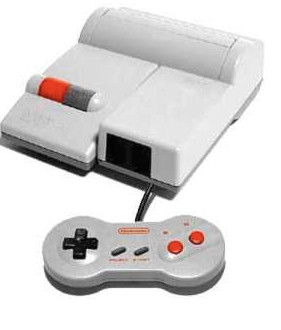

The console was released on July 15, 1983 as the Family Computer (or Famicom for short) for ¥14,800 alongside three ports of Nintendo's successful arcade games Donkey Kong, Donkey Kong Jr. and Popeye. At June 1985's Consumer Electronics Show (CES), Nintendo unveiled the American version of its Famicom. This is the system which would eventually be officially deployed as the Nintendo Entertainment System or “NES” for short. The American video game press was skeptical that the console could have any success in the region, with the March 1985 issue of Electronic Games magazine stating that "the videogame market in America has virtually disappeared" and that "this could be a miscalculation on Nintendo's part. Nintendo released 17 launch titles: 10-Yard Fight, Baseball, Clu Clu Land, Duck Hunt, Excitebike, Golf, Gyromite, Hogan’s Alley, Ice Climber, Kung Fu, Pinball, Soccer, Stack-Up, Tennis, Wild Gunman, Wrecking Crew, and Super Mario Bros. Some varieties of these launch games contained Famicom chips with an adapter inside the cartridge so they would play on North American consoles, which is why the title screen of "Gyromite" has the Famicom title "Robot Gyro" and the title screen of "Stack-Up" has the Famicom title "Robot Block". The system was originally targeted for release in the spring of 1985, but the release date was pushed back. After test-marketing in the New York City area in late fall, retailers had reportedly stated the system "failed miserably". Nintendo tried a second time; the system was test-marketed further beginning in February 1986, with the nationwide release occurring in September 1986. The NES was released after the "video game crash" of the early '80s, whereupon many retailers and adults had regarded electronic games as being merely a passing fad and many believed at first that the NES was another fad. The NES hardware was also very influential. Nintendo chose the name "Nintendo Entertainment System" for the US market and redesigned the system so it would not give the appearance of a child's toy. The front-loading cartridge input allowed it to be used more easily in a TV stand with other entertainment devices, such as a video cassette player. On August 14, 1995, Nintendo discontinued the Nintendo Entertainment System in North America.
